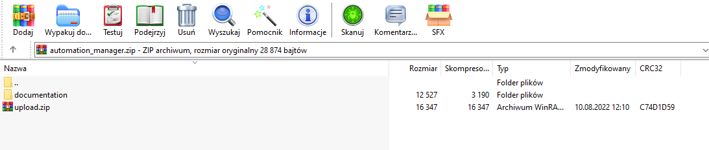
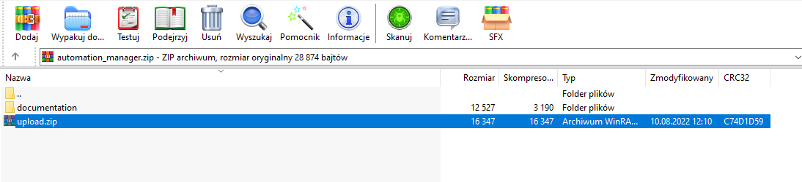
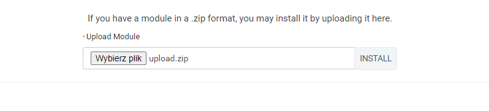
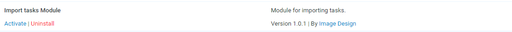
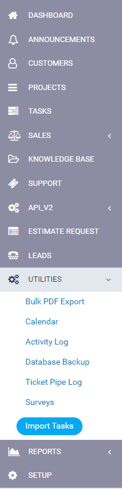
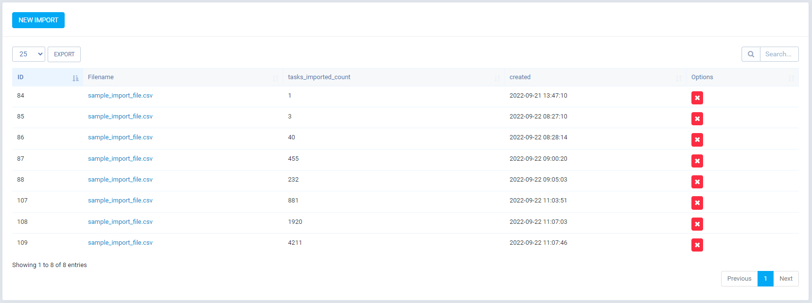
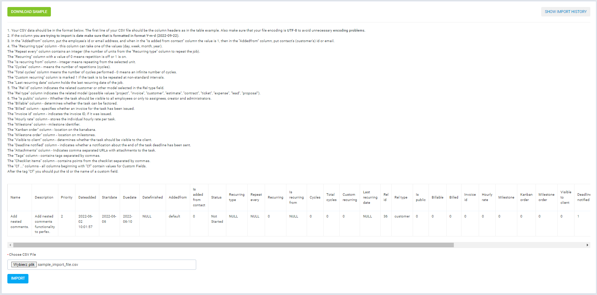

Table of contents
Introduction
Module adds "Import Tasks" menu subtab in Utilities tab. In this tab you can view history of imports, dowload sample import file and make new import.
For each import you must set columns:
- Name
- Description
- Priority
- Dateadded
- Startdate
- Duedate
- Datefinished
- Addedfrom
- Is added from contact
- Status
- Recurring type
- Repeat every
- Recurring
- Is recurring from
- Cycles
- Total cycles
- Custom recurring
- Last recurring date
- Rel id
- Rel type
- Is public
- Billable
- Billed
- Invoice id
- Hourly rate
- Milestone
- Kanban order
- Milestone order
- Visible to client
- Deadline notified
- Attachments
- Tags
- Checklist items
- Cf ...
Installation
-
Extract your downloaded file contents. You will notice a folder called
"documentation" and a new zip
file, called upload.zip. Since "documentation" folder contains this
readme file and helpful
instructions that are not needed in your Perfex CRM's installation, we will
focus on the
upload.zip
file.

-
File upload.zip contains the module files (in a module format) that you
upload in Perfex
CRM's
Modules
installation section. Extract this folder (no contents of this folder, but only
this zip).

- Go to your Perfex CRM's Admin area and select the following menu item: SETUP > MODULES
-
Select the extracted upload.zip at Module installation selection prompt
and press
INSTALL

-
Find the newly installed module and press ACTIVATE.

- You will be told that module is successfully activated. On the setting menu you will see "Import Tasks" tab in the Utilities tab. That's it! You are now ready to start using the module.


How to use this module
-
Go to the Utilities -> Import Tasks tab

-
Here you see all of your tasks imports

-
In order to make new import click NEW IMPORT button
Rules for proper import:- Your CSV data should be in the format below. The first line of your CSV file should be the column headers as in the table example. Also make sure that your file encoding is UTF-8 to avoid unnecessary encoding problems.
- If the column you are trying to import is date make sure that is formatted in format Y-m-d (2022-09-22).
- The "Name" column is required and must contain the name of the task.
- The "Description" column is required and contains the description of the task. Can be empty or HTML code.
- The "Priority" column can be name of priority or id.
- The "Dateadded" column contain date and time of task addition.
- The "Startdate" column contain date of task start.
- The "Duedate" column contain due date of task.
- The "Datefinished" column contain date and time of finish.
- In the "Addedfrom" column, put the employee's id or email address, and when in the "Is added from contact" column the value is 1, then in the "Addedfrom" column, put contact's (customer's) id or email.
- The "Status" column can be name of status or id.
- The "Recurring type" column - this column can take one of the values (day, week, month, year).
- The "Repeat every" column contains an integer (the number of units from the "Recurring type" column to repeat the job).
- The "Recurring" column with a value of 0 means repetition is off or 1 is on.
- The "Is recurring from" column - integer means repeating from the selected unit.
- The "Cycles" column - means the number of repetitions (cycles).
- The "Total cycles" column means the number of cycles performed - 0 means an infinite number of cycles.
- The "Custom recurring" column is marked 1 if the task is to be repeated at non-standard intervals.
- The "Last recurring date" column holds the last recurring date of the job.
- 5. The "Rel id" column indicates the related customer or other model selected in the Rel type field.
- The "Rel type" column indicates the related model (possible values "project", "invoice", "customer", "estimate", "contract", "ticket", "expense", "lead", "proposal").
- 6. The "Is public" column - Whether the task should be visible to all employees or only to assignees, creator and administrators.
- The "Billable" column - determines whether the task can be factored.
- The "Billed" column - specifies whether an invoice for the task has been issued.
- The "Invoice id" column - indicates the invoice ID, if it was issued.
- The "Hourly rate" column - stores the individual hourly rate per task.
- The "Milestone" column - milestone identifier.
- The "Kanban order" column - location on the kanabana.
- The "Milestone order" column - location on milestones.
- The "Visible to client" column - determines whether the task should be visible to the client.
- The "Deadline notified" column - indicates whether a notification about the end of the task deadline has been sent.
- The "Attachments" column - Indicates comma separated URLs with attachments to the task.
- The "Tags" column - contains tags separated by commas.
- The "Checklist items" column - contains points from the checklist separated by commas.
- The "Cf ..." columns - all columns beginning with "Cf" contain values for Custom Fields.
- After the tag "Cf" you should put the id or the name of a custom field.
Then click "Import" button


Changelog
Version 1.0.1 (22.09.2022 r.)
- [NEW] From now on you can import attachments
- [NEW] From now on you can import tags
- [NEW] From now on you can Checklist items
- [NEW] From now on you can Custom fields
- [NEW] From now on you can select priority by name in Priority column
- [NEW] From now on you can select user by email in Addedfrom column
- [NEW] From now on you can select status by name in Status column
Version 1.0.0 (04.06.2022 r.)
- Initial Release